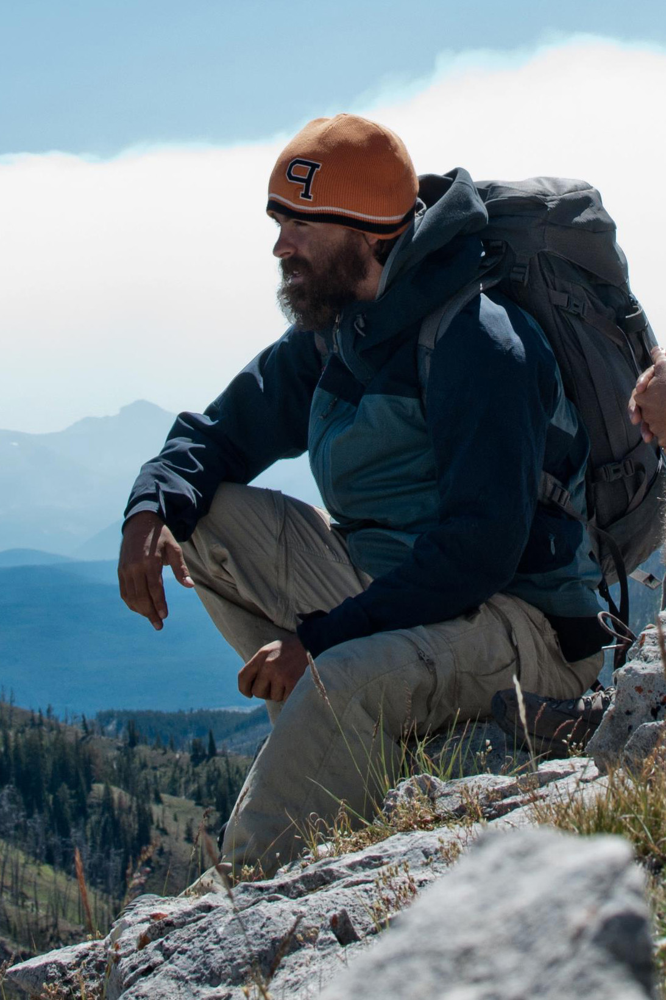
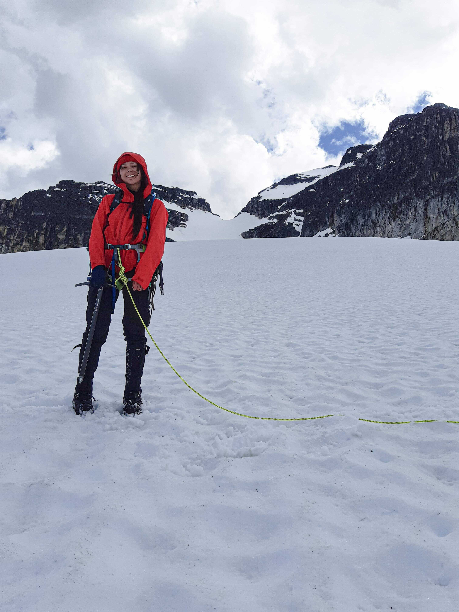

Team
Meet the team reading Earth's history.
The group brings together sedimentology, geochemistry, stratigraphy, computation, and field experience across projects on sea level, carbonate systems, stratigraphy, and past climate. Each person manages their own research projects with mentorship and support from the PI, and we work together to share ideas, data, and skills.
Current Members


MSc Candidate
Miranda Reid
Miranda uses machine learning and coastal observations to improve predictions of future risk.

Postdoctoral Researcher
Argelia Silva Fragoso
Argelia models seafloor lava accretion and carbon storage opportunities near ridge systems.
Alumni And Past Members
Past members and themes.



NSERC USRA, 2021 to 2022
Kristyn Lang
Kristyn worked on software and models for carbonate facies and sea-level inference.